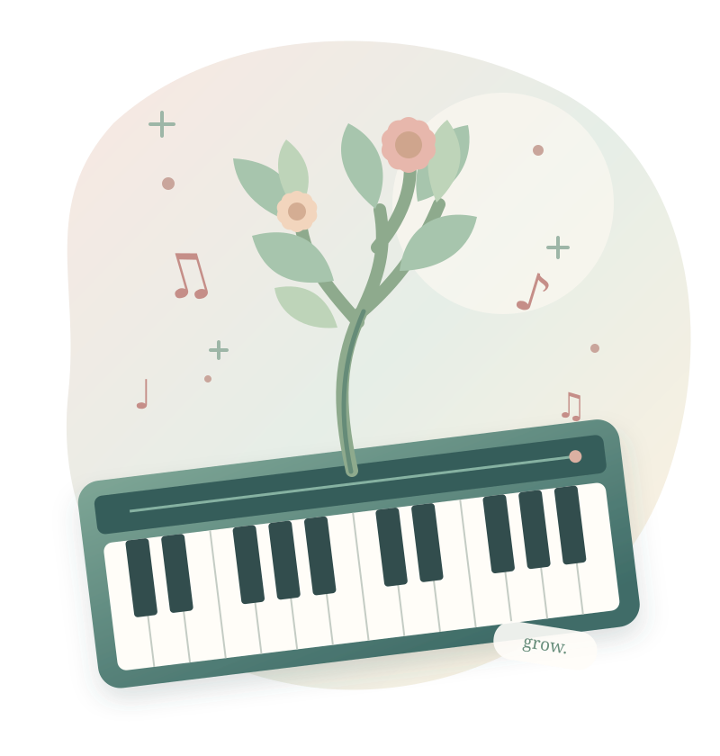

A LITTLE ESSAY FOR PIANO TEACHERS
ピアノを教える、すべての人へ。
「学ぶ」とは何か。
弾けるようになった、その先に。
子どもの中では、
どんな未来が育っているのでしょう。

notice.grow.弾けるようになった。
それだけが「成長」だろうか。
昨日はできなかったことが、今日できる。それはうれしい変化です。でも、子どもが育つという出来事は、もっと長く、もっと複雑なのかもしれません。
ピアノの先生だからこそ考えたい、三つの問いから始めましょう。
演奏が上手になることと、人として育つことは同じでしょうか。
思うように進まない時期に、私たちは何を見つめればよいのでしょう。
教室を離れたあと、その子に何が残っていてほしいでしょうか。
「教える」「学ぶ」のその先にある、時間をかけて起こる変化について。
MORE THAN IMPROVEMENT
「上達」と「成長」は、
同じことだろうか。
昨日まで弾けなかった曲が弾けた。これは確かな上達です。でも、その子が自分の音を聴いて考えるようになったことや、友だちの演奏に耳を傾けるようになったことは、同じ物差しでは測れません。
上達は、ある技能や課題についての変化として確かめやすい。一方、育つことは、ものの見方、他者との関わり、自分で選ぶ力などが、時間の中で形づくられていくことまで含みます。指が速く動くようになることは素晴らしい。しかし、それだけで「人として育った」と言うのは早計でしょう。
正確に弾ける
新しい曲に進める
自分の音に問いを持つ
音楽との関係が変わる
本稿の考察に基づく説明用の概念図。発達の診断や実測データではありません。
NOT A FIXED FINISH LINE
育つとは、
完成形に近づくことなのか。
私たちはつい、「こういう子に育ってほしい」という姿を思い描きます。自信のある子、努力できる子、表現力のある子。それは願いであると同時に、教師の理想を子どもに押しつける危険も持っています。
成長を一つの完成形へ近づく直線として見ると、途中の迷いや回り道は「遅れ」に見えます。ある時期は舞台を楽しみ、別の時期は人前で弾きたくないと思うこともある。育つとは、誰かが決めた理想像に揃うことではなく、その人が自分なりの可能性を広げていくことではないでしょうか。これは本稿の哲学的な立場であり、科学的な唯一の定義ではありません。
本稿の考察に基づく説明用の概念図。発達の診断や実測データではありません。
DIFFERENT TEMPOS
育つ速さは、
みんな違っていい。
同じ年齢、同じ教材、同じレッスン回数でも、変化の現れ方は違います。すぐに弾いて試す子もいれば、しばらく聴いてから動く子もいます。ある日急に弾けるように見えても、その前に見えない準備が積み重なっていたのかもしれません。
学習や発達は、生物学的な条件だけでなく、家庭・文化・経験・環境と相互に関わる過程です。学習科学の研究報告 ↗も、個人差と文脈の重要性を指摘しています。だからといって「待っていれば必ず伸びる」とも言えません。困りごとが続くなら、教材や教え方、練習環境、本人の負担を見直す必要があります。比べないことと、見過ごすことは違うのです。
他人との比較だけでは、本人の変化を見失いやすい。
その子の経験と今の困りごとを丁寧に確かめる。
本稿の考察に基づく説明用の概念図。発達の診断や実測データではありません。
RELATIONSHIPS AND GROWTH
安心できる関係が、
挑戦の土台になる。
「先生、もう一回やってみてもいい？」と言える教室と、間違えた瞬間に黙ってしまう教室。子どもの能力が同じでも、そこで見える姿は違うでしょう。
幼少期の発達研究では、子どもの働きかけに大人が応じる双方向のやりとりが、発達を支える重要な環境の一つとされています。Harvard Center on the Developing Child ↗。ただし、これを「ピアノの先生の一言で脳が発達する」と単純化することはできません。音楽教室でできるのは、子どもの表情や音を観察し、その子の発した小さなサインに応えること。安心とは、難しいことを避けることではなく、安心して難しいことに向かえることです。
本稿の考察に基づく説明用の概念図。発達の診断や実測データではありません。
SELF-BELIEF AND IDENTITY
できることが増えると、
自分の見方も変わる。
一度失敗した子が「私には無理」と言うことがあります。反対に、難しい場所を自分で直せた経験から「工夫すれば変えられるかも」と思うこともあります。
ここで育っているのは演奏技術だけではありません。自分は何ができ、どうすれば取り組めるかという自己理解も、経験と周囲の反応を通して変化していきます。何でも「できるよ」と励ますだけでは、困難を過小評価する場合もあります。実際に起きた小さな変化を本人と確かめる。「さっきより、左手の音が聴こえたね」のような具体的な言葉が、次の行動の手がかりになります。
うれしい言葉。でも、次の工夫は見えにくいことも。
変化と行動が結びつき、次に試すことが見えてくる。
本稿の考察に基づく説明用の概念図。発達の診断や実測データではありません。
AGENCY AND AUTONOMY
「自分で決める力」は、
少しずつ育っていく。
先生が選んだ曲を、先生の指示どおりに弾く。初めはそれで十分な場面があります。しかし、いつか「この曲を弾きたい」「ここは柔らかい音にしたい」と本人が選べるようになったら、学びの質は変わります。
OECDのラーニング・コンパスは、未知の状況で自ら方向を見出すエージェンシーを重視しています。それは単なる好き勝手や、一人ですべて決めることではありません。他者との関わりの中で、意味ある行動を選ぶ力です。OECDの解説 ↗。レッスンなら「どちらの曲から弾く？」「今の演奏で、一つ直すならどこ？」と、小さな選択を任せることから始められます。
本稿の考察に基づく説明用の概念図。発達の診断や実測データではありません。
GROWING WITH OTHERS
育つとき、人は
他者との関わり方も変える。
連弾で相手の呼吸を待てるようになる。友だちの演奏に拍手する。年下の子に、自分が工夫したことを話す。どれも、楽譜の正確さだけでは説明できない変化です。
音楽は、一人で完結する活動でもあり、他者と音を重ねる活動でもあります。共演は、相手を聴き、自分の音を調整し、違いを受け止める経験になりえます。ただし、アンサンブルに参加すれば自動的に協調性が育つ、とまでは言えません。誰かと音を交わした経験が、その人にどんな意味を残したかを丁寧に見ることが大切です。
本稿の考察に基づく説明用の概念図。発達の診断や実測データではありません。
WHEN PROGRESS IS NOT LINEAR
伸び悩みや寄り道も、
成長の時間になりうる。
練習しても前に進まない時期があります。以前できたことが、急にできなくなることもあります。教師にとっても、本人にとっても、不安になる瞬間です。
しかし、停滞が見えるからといって、何も起きていないとは限りません。考え方を変えていたり、目標を見直していたり、別の音楽に興味が移っていたりする可能性もあります。同時に、苦痛や過度な負担を「成長のため」と正当化してはいけません。疲労、痛み、不安、練習環境の問題があれば、休むことや方法を変えることが必要です。成長を信じることと、困難を放置することは別です。
結果が横ばいに見える時期。
興味・疲れ・方法・本人の気持ちを確かめる。
本稿の考察に基づく説明用の概念図。発達の診断や実測データではありません。
SEEING THE WHOLE CHILD
育ったかどうかは、
点数だけではわからない。
演奏グレードやコンクールの結果は、努力を振り返る一つの手がかりです。しかし、それが子どもの価値や、音楽との関係のすべてを表すわけではありません。
「今日は自分から練習の相談をした」「以前は嫌がっていた連弾を楽しめた」「演奏後、自分の良かったところを話せた」。こうした観察にも意味があります。ただし、教師の印象だけで決めつけず、本人の言葉や家庭での様子も、同意を得て確かめたいところです。成長の評価には、成果の記録と、本人の物語の両方が必要なのではないでしょうか。学習評価の研究報告 ↗。
本稿の考察に基づく説明用の概念図。発達の診断や実測データではありません。
BEYOND THE LESSON ROOM
「先生がいなくても」が、
育つことの一つの証。
先生の前で上手に弾けることは、レッスンの大切な成果です。でも、その子が家で好きな曲を探し、音を試し、うまくいかないところを自分で考えられたなら、教室の外にも音楽が広がっています。
教育が目指すものの一つは、教師への依存を増やし続けることではなく、本人が必要なときに助けを求めながら、自分で判断できる範囲を広げることではないでしょうか。「自立」は孤立ではありません。先生に質問することも、友だちと演奏することも、自分で選んだ行動なら主体性の表れです。育つとは、支えを失うことではなく、支えを使いこなせるようになることでもあります。
本稿の考察に基づく説明用の概念図。発達の診断や実測データではありません。
A LIFE WITH MUSIC
育つとは、
音楽が人生の一部になること。
子どもの頃にピアノを習った人が、いつまでもピアノを弾き続けるとは限りません。途中でやめることも、別のことに夢中になることもあります。では、そこまでの時間は無駄だったのでしょうか。
ふと耳にした曲に心が動くこと。誰かの演奏を尊重できること。自分の気持ちを音楽に重ねられること。ピアノを弾くことから離れても、音楽との関わりが残る可能性はあります。ただし、音楽経験がすべての人に同じ効果を残すとは言えません。教師が望む「豊かな人生」の形も、一つではありません。私たちは、その子が何を弾けるようになることだけでなく、どんなふうに音楽と生きられることを願っているのか。
できることが増えているか
自分の変化に気づいているか
人や音楽との関わりが変わるか
自分の意思で関われるか
音楽が人生に残るか
本稿の考察に基づく説明用の概念図。発達の診断や実測データではありません。
THE ESSENCE OF GROWING
育つとは、
経験と関係の中で、
自分の可能性と生き方を広げていくこと。
育つとは、時間の中で経験を重ね、他者や環境と関わりながら、技能だけでなく自己理解・価値観・選択の幅を変えていく過程である。
これは本稿が提案する「育つ」の捉え方です。発達科学や学習科学の知見を参照していますが、特定の学説による唯一の定義ではありません。
ピアノを教える私たちに見えるのは、レッスンの一場面だけです。その一時間を大切にしながらも、目の前の子どもが教室の外で生きていること、そして未来にさまざまな選択肢を持つ一人の人であることを忘れずにいたいと思います。
いつかその子がピアノを弾かなくなっても、音楽に出会った時間が、その子なりの意味を持ち続けていたら。それも、音楽教育の一つの成果ではないでしょうか。
ONE LAST QUESTION
今日のレッスンは、
十年後のその子に、
何を残すのだろう。
答えは、今日すぐにはわかりません。
だからこそ、今、目の前で起きている小さな変化を大切にしたいのです。
FURTHER READING
参考資料と、この考察の位置づけ
研究に基づく一般的な知見と、本稿独自の哲学的な定義・レッスン例を区別しています。図は説明用の概念図であり、実測値や個人の発達診断を示すものではありません。音楽経験が人格形成に必ず特定の効果を生むと主張するものでもありません。
- 01National Academies (2018), How People Learn II — Summary ↗
学習・発達の個人差、生物学的・社会的・文化的文脈、生涯にわたる変化。
- 02National Academies (2018), How People Learn II — Motivation to Learn ↗
目標、所属感、自己理解、主体性と動機づけの関係。
- 03National Academies (2018), How People Learn II — Implications for Learning in School ↗
学習者の主体性、フィードバック、学習評価の役割。
- 04Harvard Center on the Developing Child — Serve and Return ↗
幼少期の応答的な大人との関係と発達。ピアノ教育への直接的な効果を示す研究ではありません。
- 05OECD — Learning Compass 2030 ↗
知識・技能に加え、態度・価値観・ウェルビーイングとエージェンシーを重視する教育観。